Toon Shader
This toon shader is based on the Blinn-Phong lighting model. It has the basic functions of directional lighting, specular lighting, and rim lighting. It also includes using a texture as a toon ramp and an option for emission. The toon ramp plays a big part in the look of the shader so we can get a variety of shading effects by just adjusting this texture.
Some other resources for toon lighting and the Blinn-Phong lighting model are linked here:
Toon Shader by Roystan
Blinn-Phong Lighting in OpenGL
Blinn-Phong Reflection Model
The main values we will need to use to calculate lighting using the Blinn-Phong model is the Surface Normal (N) and the Light Direction (L). The Surface Normal comes from the mesh and can be manipulated by a Normal Map, usually to add more detail. The Light Direction will come from the main directional light in the scene.
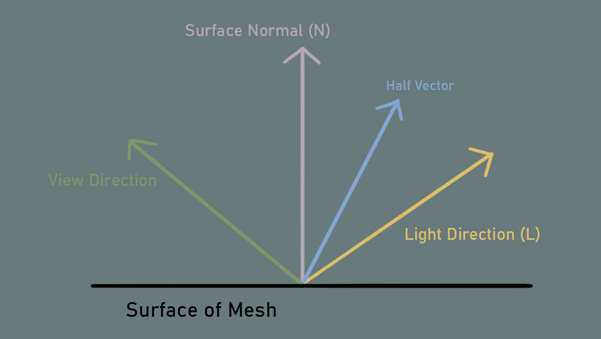
Using the dot product between these two vectors, or NdotL, we can determine how much light each part of the surface will receive. When N and L are parallel, the dot product is 1, which means that this will have the most light. As L moves away from being parallel to N, the dot product will start going to 0, so the amount of light will decrease. When N and L are perpendicular, the dot product is 0, which means there will be no light. When the angle between N and L is greater than 0, the dot product will be negative, but since we Saturate NdotL (so the values fall only between 0 and 1), there will also be no light on these areas.
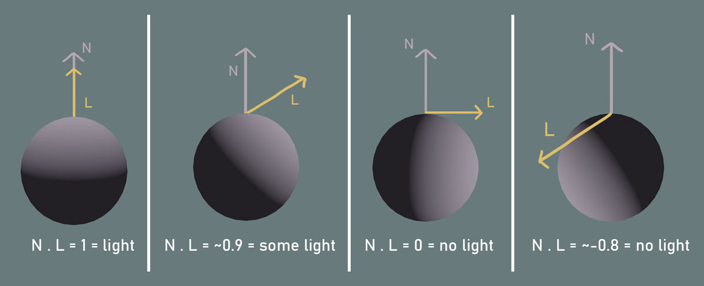
We will need some kind of gradient texture for the toon ramp. This can be made using the gradient tool in Photoshop. This will be the main contributing factor to the look of the lighting. We can play with the number of steps, the transition between the steps, and even the color.
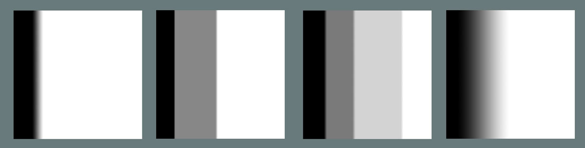
First, we can make a TextureSample for the BaseColor texture. I like to multiply this with a TintColor, since this can be used to color objects that don’t have a texture or just to adjust the color of the texture in the engine. If you want the color of the texture to be unaffected, the TintColor can just be white.
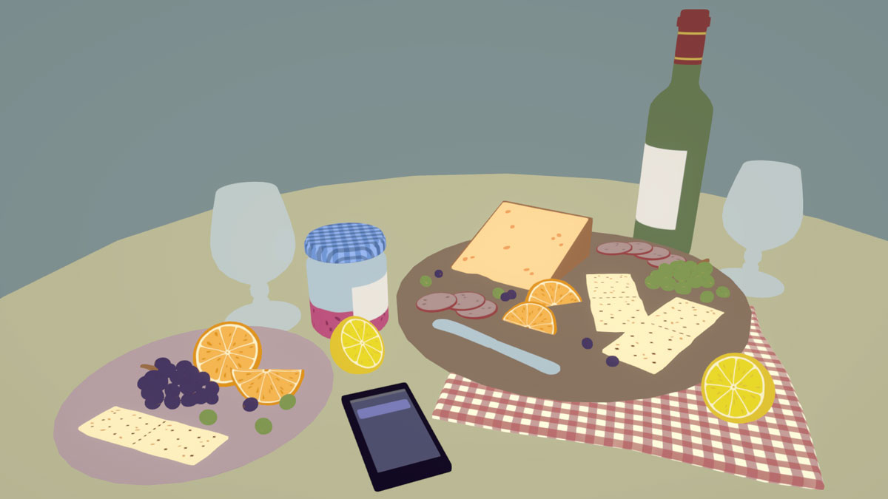
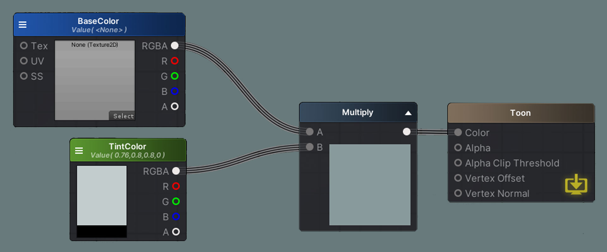
In the BaseColor texture’s alpha channel, I added an emission mask. The areas in white will be emissive, and the areas in black won’t be. Multiply the mask with an HDR color as well as the BaseColor texture so the detail and color of the texture will be taken into account. With a bloom post-processing effect, we can now get a nice glowing effect.
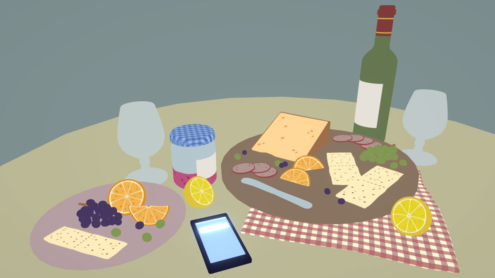
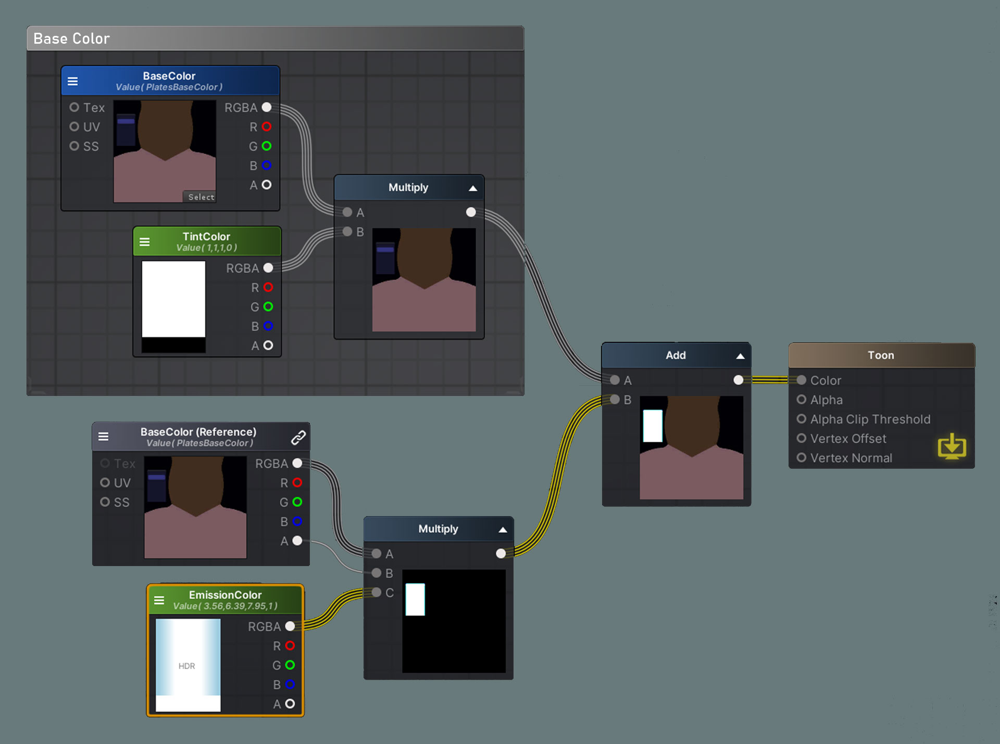
For the directional light, we will use the basic NdotL formula from the Blinn-Phong lighting model. Don’t forget to Saturate the dot product! A NormalMap can also be added here by connecting it to the WorldNormal node. I made this into a local variable since we will be using these Normals for other lighting calculations.
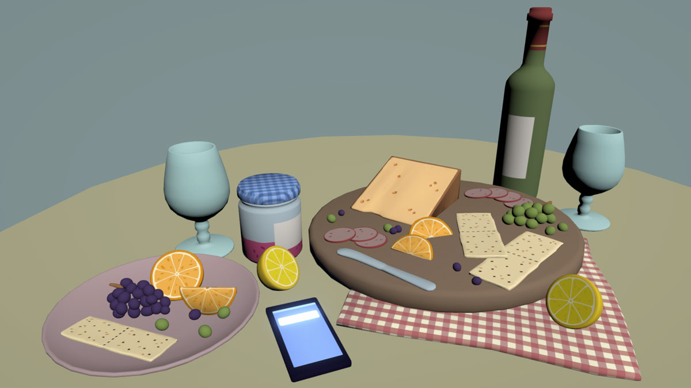
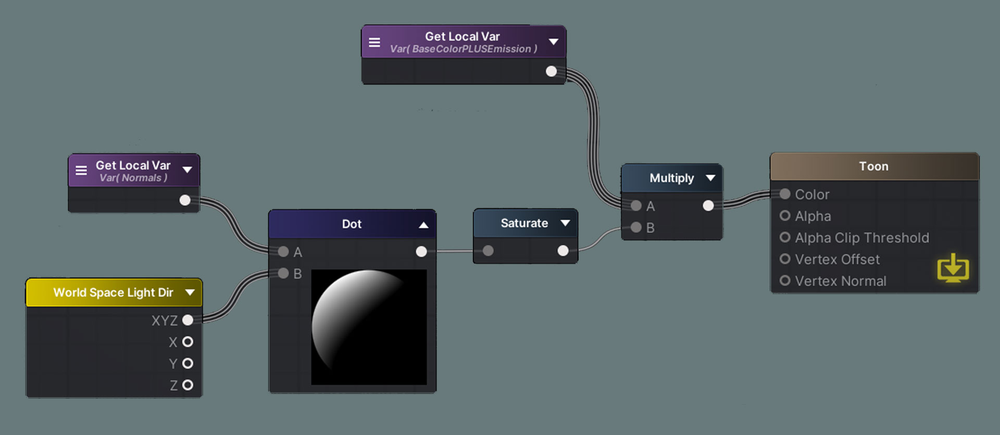
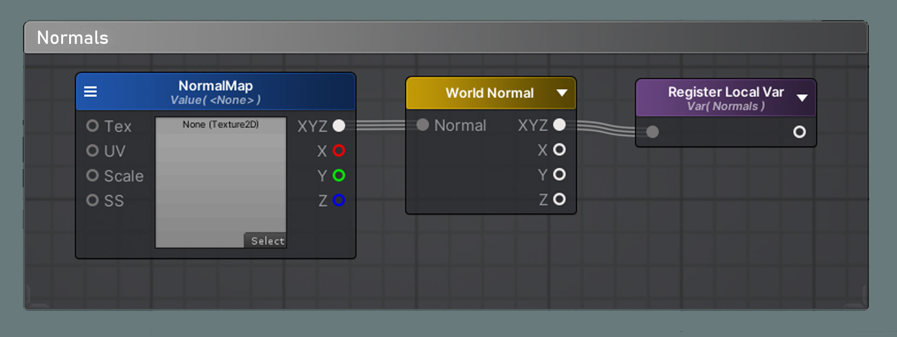
The dot product will now become the UV’s for the toon ramp texture. This is how we achieve the toon lighting effect. As the NdotL values progress from 0 to 1, they will fall into the steps of the ToonRamp texture, so instead of a smooth progression from light to dark, there will be hard edged steps from light to dark. Once again, the steps can be adjusted by changing the ToonRamp texture.
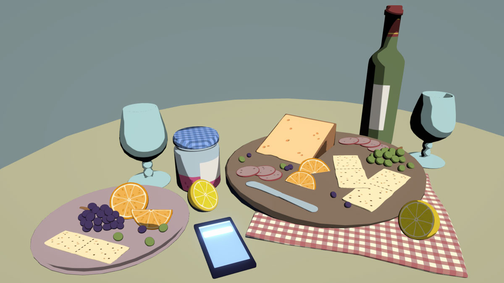
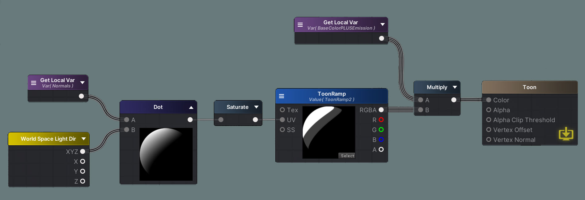
We can multiply this with the LightAttenuation node, which contains the cast shadow information. Make sure the CastShadows option in your mesh’s MeshRenderer is on! I also added the LightColor node, which is the color of the directional light in the scene. Finally, I like to Add an AmbientColor to the toon shadow result since the shadows are a bit too dark right now. This represents a simplified form of bounce light and can be used to adjust the overall color of the shadow and object.
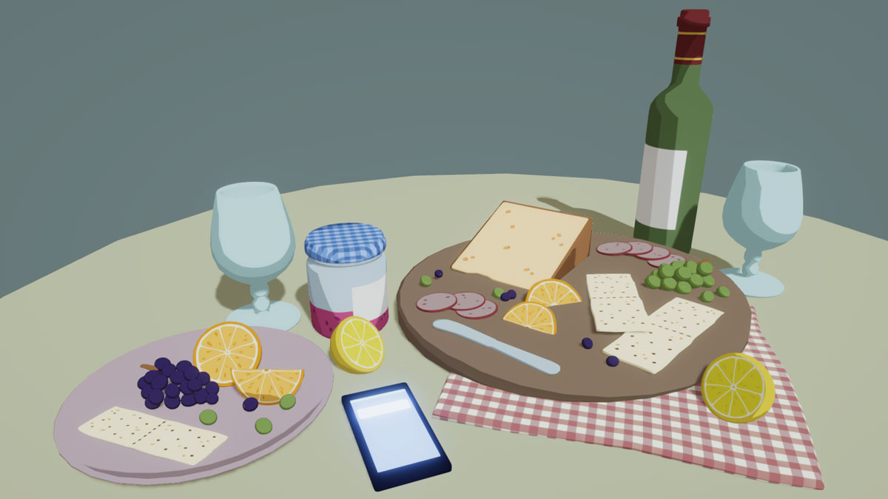
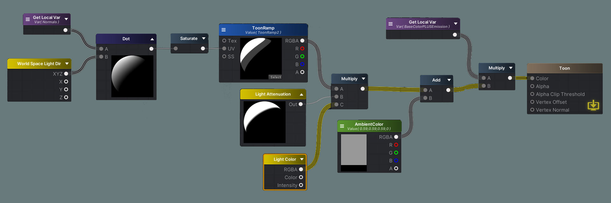
Finally, here are variations on the same scene with just a different toon ramp. The more steps there are in the toon ramp, the more “detailed” the light will be. Make sure to clamp the ToonRamp texture in the import properties or you will have incorrect results
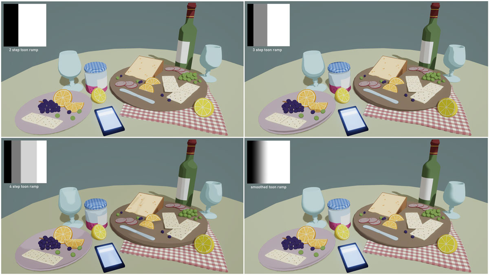
For specular lighting, we will need the dot product between the normals of the surface and the half vector. The half vector is the sum of the vectors of the light direction and the view direction. We have to take the view direction into account since the specular lighting depends on what angle the surface is being viewed. We can control the size of the specular reflection by raising the dot product to an exponent and adjusting it. I also multiplied the SpecularAmount with itself for more noticeable changes and better control. Finally, to color the light, we can multiply this with a SpecularColor and the LightColor.


To get the toon effect, we can run this through the Smoothstep function. I also multiplied this with a SpecularMap texture to give the option of masking out areas that shouldn’t have specular lighting. For example, shiny materials like metals will have more specular reflection and matte materials like wood won’t have any specular effect.
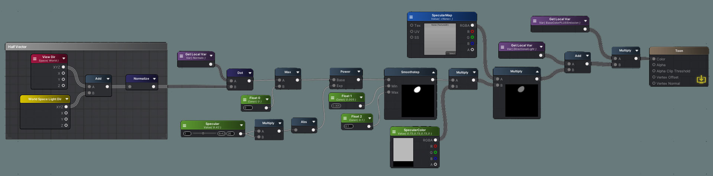
Rim lighting is often used to simulate backlighting, and is a subtle but nice touch to our shader. We can use the Fresnel node, which highlights the parts of the surface facing away from the camera. We will repeat the NdotL formula we previously used for directional lighting and use this to mask out the Fresnel since we only want it to show on the parts of the object that is lit. Finally, we can Step this to get hard edges for a toon effect and multiply it with a RimColor.
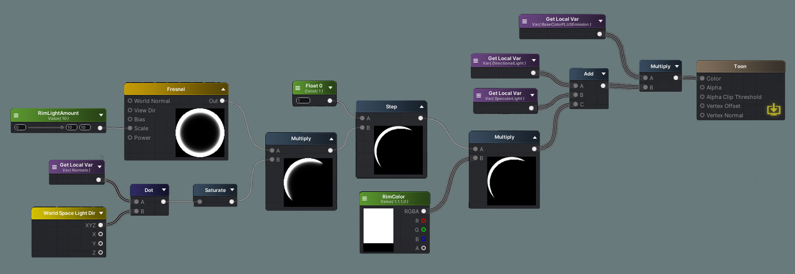
To blend the lighting together, we just need to add the DirectionalLight, SpecularLight, and RimLight together. Then we multiply the lighting with the Emission and BaseColor and we’re done!